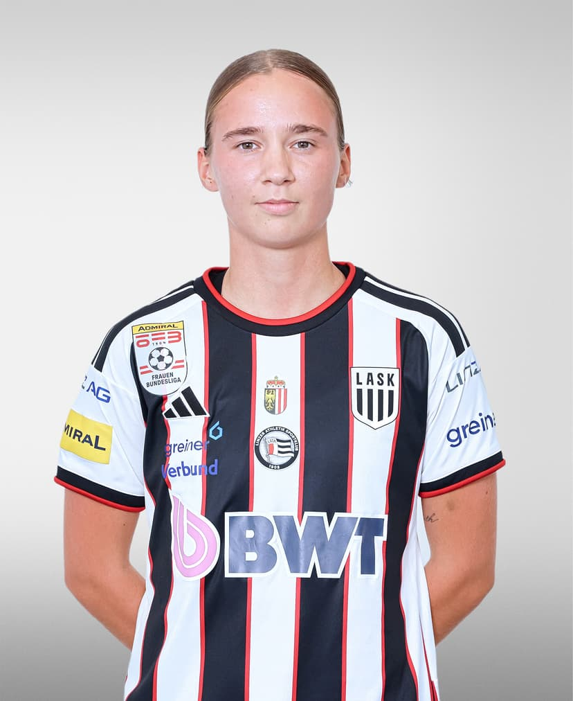

VERO / SELECTED
THE WORK
IN MOTION.
Public milestones from the careers and projects we are proud to represent. A snapshot is never the whole story.
01 / PUBLIC MILESTONES
SELECTED
CHAPTERS.
A move is a moment. The work around it is longer.
These are selected public records from VERO’s player and coaching work. They show a current club, a new chapter or a documented appointment—not private terms, promises or a complete client list.
HOW TO READ THIS
Each card links to a public profile with independent source links. Club status and appointments can change during a season.

02 / THE STANDARD
CONTEXT
BEFORE CLAIM.
PUBLIC FIRST
We publish what can be checked, and link to independent records where they are available.
THE PERSON IN VIEW
A club line is only one part of a career. The player, coach and the environment still matter.
ROOM FOR THE NEXT STEP
Every public milestone is a starting point for a more useful conversation—not a finished headline.
YOUR NEXT CHAPTER
LET’S TALK
FOOTBALL.
Are you a player, coach or club looking for a considered next step?
START A CONVERSATION